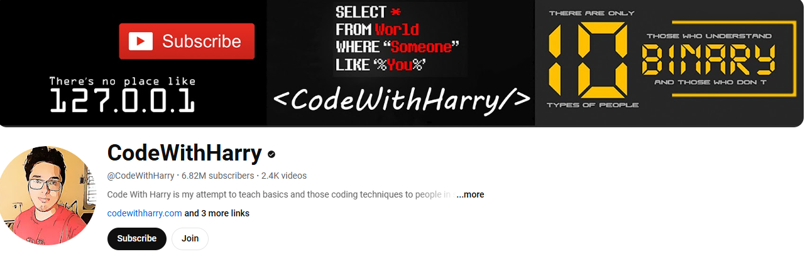

Back
C programming language Reference book
"C++ Primer" by Stanley B. Lippman, Josée Lajoie, and Barbara E. Moo Youtube channel

channle link
channle link
Compiler for c++ programming
For Android Welcome to the ultimate C++ Compiler app, designed to provide an intuitive and powerful coding experience. The app is equipped with features that cater to both beginners and seasoned developers, ensuring a seamless coding journey.
Key Features:
Syntax Highlighting: Enjoy a vibrant and readable code editor with color-coded syntax highlighting, making it easy to distinguish between different parts of your code.
Fast Code Layout: Our fast code layout includes frequently used symbols, allowing you to code more efficiently and with fewer keystrokes.
Tools Layout: Access essential shortcuts such as copy, paste, undo, redo, share, and more, all from a convenient tools layout. Customize your own shortcuts to match your workflow and enhance productivity.
Navigation Layout: Move your cursor effortlessly with our navigation layout, designed to make code navigation smooth and intuitive.
Scan Code Feature: Quickly scan and import code snippets using your device's camera. Perfect for grabbing code from textbooks, whiteboards, or printed documents.
Tutorials and News Section: Stay updated with the latest in Python development through our integrated tutorials and news section. Learn new techniques, best practices, and keep up with industry trends.
Bookmarks and Project Management: Easily bookmark important code snippets and projects for quick access. Manage your projects efficiently with our built-in project organization tools.
App link
For windows Visual Studio Code (VS Code) is a free, open-source code editor developed by Microsoft. It's popular among developers due to its versatility and powerful features. Here are some key points:
Lightweight: Despite its powerful features, VS Code is lightweight and fast.
Extensible: You can enhance its functionality with a wide range of extensions available in the Visual Studio Code Marketplace.
Cross-Platform: It works on Windows, macOS, and Linux.
Built-in Git: It has integrated Git control, making version control easy.
IntelliSense: Offers smart code completion, syntax highlighting, and parameter info based on the code context.
Debugging: Provides a powerful debugger for various programming languages.
It's an excellent tool for developers of all levels, offering a rich and customizable development environment.
download link
is a non-profit educational organization that offers a free, interactive learning platform for people to learn web development and other programming skills. Here are some key features:
Interactive Curriculum: The platform provides a structured curriculum that starts with basics like HTML, CSS, and JavaScript, and progresses to more advanced topics like front-end libraries, back-end development, and data visualization.
Certifications: You can earn free verified certifications by completing the required projects and passing the tests.
Projects: Each certification requires you to build projects that help you apply what you've learned in a practical way.
Community: freeCodeCamp has an active online community where you can connect with other learners, share knowledge, and get support.
Job Readiness: The platform aims to help learners get their first developer job by providing them with the necessary skills and projects to showcase in their portfolio.
It's a great resource for anyone looking to break into the tech industry without any cost.
direct link
created by prince verma(boyinfire),BIT college Varanasi
this website is help all BCA students and for begginners too.
contact us